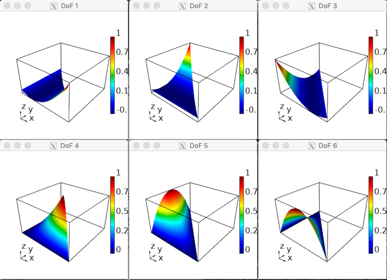
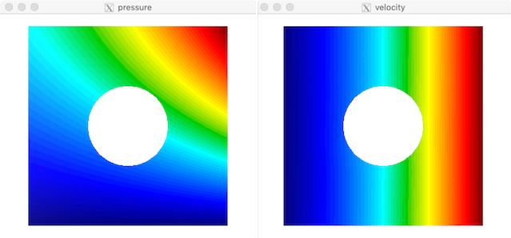

Tools
General Tools
Display Basis
The display-basis miniapp, found under miniapps/tools, visualizes various
types of finite element basis functions on a single mesh element in 1D, 2D,
and 3D.

The element type, basis type and order can be changed interactively. The mesh element is either the reference element, or a simple transformation of it.
Low-Order Refined Transfer
The lor-transfer miniapp, found under miniapps/tools demonstrates the
capability to generate a low-order refined mesh from a high-order mesh, and to
transfer solutions between these meshes.

Grid functions can be transferred between the coarse, high-order mesh and the low-order refined mesh using either projection or pointwise evaluation. These transfer operators can be designed to discretely conserve mass and to recover the original high-order solution when transferring a low-order grid function that was obtained by restricting a high-order grid function to the low-order refined space.
DataCollection Tools
Convert DC
This tool, named convert-dc in the miniapps/tools subdirectory,
demonstrates how to convert between MFEM's different concrete
DataCollection options.
Currently supported data collection type options:
| Nickname | Full Class Name |
|---|---|
| visit | VisItDataCollection (default) |
| sidre or sidre_hdf5 | SidreDataCollection |
| json | ConduitDataCollection w/ protocol json |
| conduit_json | ConduitDataCollection w/ protocol conduit_json |
| conduit_bin | ConduitDataCollection w/ protocol conduit_bin |
| hdf5 | ConduitDataCollection w/ protocol hdf5 |
Load DC
The load-dc miniapp, found in the miniapps/tools subdirectory, loads and
visualizes (in GLVis) previously saved data using DataCollection sub-classes,
see e.g. Example 5/5p.

Currently, only the VisItDataCollection class is supported.
Get Values
The get-values miniapp, found in miniapps/tools, loads previously saved
data using DataCollection sub-classes and outputs field values at a set of
points. Currently, only the VisItDataCollection class is supported.
# Number of fields
3
# Legend
# "Index" "Location":2 "pressure":1 "velocity":2
2 1 2
# Number of points
6
0 0.0 0.8 0.717336 -0.716172 -0.696674
1 0.2 0.8 0.876045 -0.875874 -0.852278
2 0.4 0.8 1.06999 -1.07106 -1.03923
3 0.6 0.8 1.30719 -1.30931 -1.26903
4 0.8 0.8 1.59678 -1.59601 -1.54949
5 1.0 0.8 1.94995 -1.94853 -1.89371
Point locations can be specified on the command line using -p or within a
data file whose name can be given with option -pf. The data file format is:
number_of_points space_dimension
x_0 y_0 ...
x_1 y_1 ...
etc.
By default all available fields are evaluated. The list of fields can be
reduced by specifying the desired field names with -fn. The -fn option
takes a space separated list of field names surrounded by quotes. Field
names containing spaces, such as "Field 1" and "Field 2", can be entered as:
get-values -fn "Field\ 1 Field\ 2"
By default the data is written to standard out. This can be overwritten
with the -o [filename] option.
The output format contains comments as well as sizing information to aid in subsequent processing. The bulk of the data consists of one line per point with a 0-based integer index followed by the point coordinates and then the field data. A legend, appearing before the bulk data, shows the order of the fields along with the number of values per field (for vector data).